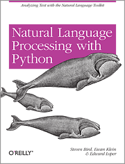

Teaching Assistant
- Ann Clifton
- Office hours: Wed 1:30PM - 2:20PM
- Location: TASC1 9404 (Natural Language Lab)
Grading
- 5 Homeworks: 50% of the grade
- 1 Midterm: 20% of the grade
- 1 Final: 30% of the grade
About the Course
Imagine a world where you can pick up a phone and talk in English, while at the other end of the line your words are spoken in Chinese. Imagine a computer animated representation of yourself speaking fluently what you have written in an email. Imagine automatically uncovering protein/drug interactions in terabytes of medical abstracts. Imagine feeding a computer an ancient script that no living person can read, then listening as the computer reads aloud in this dead language. Natural Language Processing is the automatic analysis of human languages such as English, Korean, and thousands of others analyzed by computer algorithms. Unlike artificially created programming languages where the structure and meaning of programs is easy to encode, human languages provide an interesting challenge, both in terms of its analysis and the learning of language from observations.
Lecture Notes
Video lectures: Playlist on youtube
The links to the slides/notes below will become available gradually as the semester progresses. Do not be alarmed if some PDF files are not available for download yet.
- Introduction to Linguistics and Formal language theory
- IN1 Intro
- Readings:
- Lillian Lee. I'm sorry Dave, I'm afraid I can't do that: Linguistics, Statistics, and Natural Language Processing circa 2001. The National Academies' study on the Fundamentals of Computer Science.
- Steven Abney. Statistical Methods and Linguistics. In: Judith Klavans and Philip Resnik (eds.), The Balancing Act: Combining Symbolic and Statistical Approaches to Language. The MIT Press, Cambridge, MA. 1996.
- Links:
- Probability models and language: n-grams
- PR1 Introduction to probability and information theory
- NG1 N-grams
- NG2 Smoothing N-gram models
- Readings:
- Python tidbits.
- Chapter on Natural Language Corpus Data by Peter Norvig in Beautiful Data (Segaran and Hammerbacher, 2009)
- Sections 1-14 from Kevin Knight's statistical MT workbook
- Sections 1-2.7 (p.15) & Section 5.1 from Empirical Study of Smoothing by Chen and Goodman
- Finite-state methods: automata and transducers (applications to orthography, morphology, phonology)
- Finite-state methods: edit distance (shortest path in a transducer, spelling correction, evaluation metrics)
- Hidden markov models (sequence learning)
- HMM1 Introducing HMMs
- HMM2 ngrams versus HMMs
- HMM3 parsing with HMMs
- HMM4 Viterbi algorithm for HMMs
- HMM5 HMM as language model
- HMM6 Supervised learning of a HMM
- HMM7 Lagrange multipliers for learning HMMs
- HMM8 Unsupervised learning of a HMM
- Readings:
- Pseudo-code for HMM Learning
- Additional Reading: Maximizing the posterior for HMM model learning
- Some applications of sequence learning (automatic speech recognition, part of speech tagging, name-finding, word segmentation)
- Building a classifier (PP attachment, etc)
- Context-free grammars and parsing algorithms (natural language syntax)
- CFG1 Ambiguity and CFGs
- CFG2 Definition of CFG
- CFG3 CFG Parsing
- CFG4 CFG recognition complexity
- CFG5 Probabilistic CFGs
- Readings:
- Notes on grammars and parsing by Anoop.
- Earley Algorithm (ppt) from Jason Eisner's NLP course
- Machine Translation
- SMT Tutorial (2003) by Kevin Knight and Philipp Koehn.
- Selected topics in NLP
- FS1 Feature structures and unification
- LEX1 Lexical semantics and sense disambiguation
- SEM1 Natural Language Semantics (translation into logic, language understanding, language generation)
- DIS1 Discourse and dialog models
- Natural Language and complexity theory (mathematical linguistics)
Homeworks
- Homework #1. Due Jan 28. 10%. files.
- Python tidbits.
- Additional Reading: Short Introduction to NLTK by S. Bird, E. Klein and E. Loper.
- Additional Reading for Python newbies: Python Tutorial by Guido van Rossum. Read upto Chapter 10.
- Homework #2. Due Feb 18 (deadline extended to Feb 21 due to CSIL issues). 10%. files
- CMU Pronunciation dictionary: cmudict
- Installing and using PyFST
- Using the openfst and thrax toolkits installed on CSIL Linux machines
- OpenFST fst toolkit:
/usr/shared/CMPT/cmpt413/sw/linux/openfst-1.3.3; - OpenFST download and documentation (configure with
--enable-far=truefor Thrax). - Homework #3. Due Mar 4. 10%. files
- The data files are in the directory:
~anoop/cmpt413/hw3/ - umdhmm is available on CSIL Linux machines in the directory:
/usr/shared/CMPT/cmpt413/sw/linux - Homework #4. Due Mar 25. 10%. files
- The data files are in the directory:
~anoop/cmpt413/hw4/ - Homework #5. Due Apr 8. 10%. files
- The data files are in the directory:
~anoop/cmpt413/hw5/
Files and Subversion
- The directory
~anoop/cmpt413/hw1and the directories for later homeworks are available onfraser.sfu.ca. - Use Subversion (svn) for your homeworks.
- To continue working at a later date:
- There are strict requirements on the filenames for your programs. The filenames to be used is provided in
readme.txtfile. These steps will enable us to consistently test all the submissions using the same method (see the information about automated testing below).
Programming
- We will be using the Python-based NLTK: Natural Language Toolkit for most of the homeworks in this course (version 2.0.4 is installed and should be used for the homeworks).
- Run
pythonand then type inimport nltk. If you get an error then something went wrong. Email csilop@cs.sfu.ca with the details. - It is expected that your program will compile and run using the standard runtime environment on the Linux CSIL lab machines. If you are developing on a Linux or Windows machine at home, you have to ensure that the code will run on the CSIL machines before you submit the assignment. Please either visit the CSIL lab machines or you can use
sshto login to the CSIL Linux machines and also usescpto copy over and test your programs on the CSIL Linux machines before you submit them. Check the CSIL Layout map for the machine names. - Remote access to CSIL is allowed.
- Linux terminal server is currently in beta.
- CSIL computers accept SSH connections on port 24 (rather than the usual port 22). They can only be accessed from within the SFU network. If you are outside it, you need to go through a directly accessable computer, most likely fraser.sfu.ca. Here are some examples using the usual command line
sshandscp(from OpenSSH). Below $ is the command line shell on your home computer running Linux/MacosX/Cygwin. What follows is a recipe that will connect you remotely to a CSIL Linux machine: - If your local machine (e.g your laptop) has a different username from your SFU username (your username can be found by examining your SFU email address: username@sfu.ca), then prefix the SFU username to the ssh or scp command.
ssh (username)@fraser.sfu.caandscp -r (username)@fraser.sfu.ca:~anoop/cmpt413/hw1. - CSIL uses a seperate home directory from the rest of SFU, so you also have to copy files through fraser. However, it looks like it now has a separate home for each machine, so you probably want to just keep your files in your SFU home.
- You may want to refer to a quick Unix tutorial. There are several on the web. The following one covers most of what you need to use the Linux shell effectively: Quick Unix Tutorial.
- On some CSIL Linux machines, in some rare cases, you might have to extend your CPU time limit for a process. If you are using tcsh then run the command "limit cputime 1800" to extend CPU time to 1800 secs or 30 mins. If you are using bash then use the command "ulimit -t 1800".
Homework Submission
- Your homework will be submitted electronically using the department-provided submission server. Connect to the submission server by going to the URL: https://courses.cs.sfu.ca/ (your grades for the homeworks will also be tracked on the same web page)
- The URL for your homework should be the answer directory, e.g. for hw1, the URL will be
- All homeworks are due by 11:45 PM on the homework due date.
Homework Grading
- You have 4 grace days for the entire semester. You can use up your grace days, one per homework, or all 4 for one homework (in general, any integer partition of 4, which is [[1, 1, 1, 1], [1, 1, 2], [2, 2], [1, 3], [4]] source code). If you use up all your grace days then the maximum grade if you are late will be 50 percent of the original score for that homework. Each additional day will reduce the maximum grade further by 10 percent. Weekend days count the same as weekdays for the late penalty.
- If you want to do extra stuff make sure it is correct.
- Only do extra stuff if you have finished the entire homework.
- There is no extra credit for doing more, mainly because it is a pain to grade that way.
- However doing the extra optional question for your own understanding will likely help you with the concepts covered in the course and hence you may do better in the exams or future assignments.
- Read the Mark Appeals policies in the Policies section of this web page.
Course Policies
Email policy
- We will be using the discussion board on courses.cs.sfu.ca for all discussions. For homeworks, exams, or other clarification emails do not email me (the instructor) or the TA directly.
- If you email the instructor or TA directly then use your SFU email address to send the email (do not use any other provider), and use
cmpt413:as the prefix in your subject line.
Homework submission policies
- For homework policies, see the Homeworks section
Exams
- If you must miss an exam because of a medical problem, you should make an attempt to contact me prior to the exam either by email or a message in my mailbox.
- To request an extension of the due date due to a medical problem, you must submit the offical SFU Health Care Provider statement.
- If you miss an exam due to valid medical reasons you will be graded on your performance on the rest of the course.
- Make up exams will not be given under any circumstances.
Disclaimers about this web page
- All course information on this web page is tentative and could be in error. It can also change at any time. Confirm crucial dates or information with me in person during class. Double check with SFU calendar or schedule information for official class times and final exams time and location.
- Students are expected to attend all classes: announcements about assigned readings, homeworks and exams will be made available at the start of each class. Such announcements may not be made on this web page, so don't rely on information here instead of attending class.
- Lecture notes or other materials put up on this web page are only additional material and not an alternative to the readings assigned. Only reading the lecture notes will not be enough to prepare for the homeworks or the exams.
Academic Honesty
- Some examples of unacceptable behaviour:
- Handing in assignments that are not 100% your own work (in design, implementation, wording, etc.), without proper citation. There must be a README file in your submission with citations to any external code used.
- Using any unpermitted resources during an exam.
- Looking at, or attempting to look at, another student's paper during an exam.
- Submitting work that has been submitted before, for any course at any institution.
- If you are unclear on what academic honesty is, see SFU's Policy S10-01 and the University code of academic honesty.
- All instances of academic dishonesty will be dealt with very severely.
- In general, minimum requested penalties will be as follows:
- For assignments: a mark of -100% on the assignment. So, academic dishonesty on an assignment worth 5% of your final mark will result in a zero on the assignment, and a penalty of 5% from your final grade.
- For exams: an F in the course.
- Please note that these are minimum penalties. At the instructor's option, more severe penalties may be given/requested. All instances of academic dishonesty will be noted on your University record.
- The instructor may use, or require students to submit assignments to, an automated service that will check for plagiarism.
Exams and Tests
- Midterms may be in different rooms than the lectures. You will be notified by email.
- Exams may be written in either pen or pencil. Calculators or other aids are not allowed unless explicitly stated.
- Midterm exams and other tests may or may not be returned, depending on the course. If they are returned, you can get them from the instructor's office hours. You can not dispute the marking of your exam after you have taken it out of the instructor's office.
- Final exams are not returned to students by University policy; they are kept by the instructor.
- If you miss a test or exam, you must present a note from a doctor to get a mark other than zero. Arrangements to make up the lost marks will be made on a case-by-case basis by the instructor. Make-up exams may be given as an oral examination.
- You must get a pass on the weighted average of the exams to pass the course.
Mark Appeals
Except for final grades, this is how you can go about getting your mark changed:
- Requests for a change in your mark must come to the course instructor. TAs will not change your mark, except for errors in addition or data entry.
- Requests should come in the same form as you received your marks: if you got marks by email, forward that email to the instructor; if you had paper handed back, return that.
- You should give a brief explanation of why you want your mark reevaluated.
- The instructor will remark the entire assignment/test. This will be your mark, whether it is higher or lower than the original.
- Appeals may be made up to two weeks after the mark is returned or until the final exam date, whichever is first. After that deadline, you must make a formal mark appeal for any changes.
- For exams in particular, these are not reasons to get more marks:
- I knew what I was saying here, but didn't write it.
- This is the correct answer for some question other than the one asked, but I didn't get any marks for it.
- I didn't understand the question.
Final Exam and Final Marks Appeals
If you're concerned about your mark at the end of the course, you can see the instructor. Here are some guidelines:
- You can come to the instructor's office at designated times to review your final exam.
- Like assignments, you can ask the instructor to reevaluate your final exam marking.
- The following are not good reasons to get a higher final mark:
- I want it.
- I think I deserve it.
- I need it.
- I'm close to the next grade cutoff.
- This is a good reason:
- There's a marking irregularity on my final or some other piece of work.
- The marking scheme is fixed. If you did badly on a midterm, you can't weight the final more heavily.
Textbook and References
The following material is in addition to the lecture notes in the Notes section.
Required Reading
Lecture notes on Statistical Natural Language Processing by Michael Collins
- Language models (cached)
- Hidden Markov models and tagging (sequence labeling) problems (cached)
- PCFGs (cached)
- Lexicalized PCFGs (cached)
- IBM Models 1 and 2 for machine translation (cached)
- Phrase-based translation models (cached)
- Log-linear models (cached)
- Log-linear models, MEMMs, and CRFs (cached)
- The forward-backward algorithm (cached)
- The EM algorithm (cached)
These notes were also used as part of Michael Collins' course on Natural Language Processing on coursera.
Introduction to Natural Language Processing by Steven Bird, Ewan Klein and Edward Loper

This book describes the Python-based Natural Language toolkit that we will use in the homework and will provide additional reading material for that purpose. Note that the tutorials needed for the homeworks are available online on nltk.sf.net.
Reference Textbooks
Jurafsky and Martin

Speech and Language Processing: An Introduction to Natural Language Processing, Computational Linguistics, and Speech Recognition by Daniel Jurafsky, James H. Martin. 934 pages 1 edition (January 26, 2000), Prentice Hall, ISBN: 0130950696
The book also has a webpage. In particular visit it for the Errata and the online Resources sections.
Manning and Schutze

Foundations of Statistical Natural Language Processing by Christopher D. Manning, Hinrich Schutze. 680 pages 1 edition (1999), M.I.T. Press/Triliteral, ISBN: 0262133601